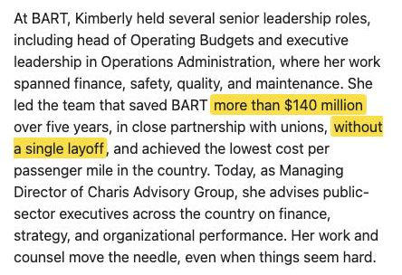
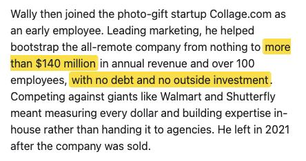

Kimberly White's BART savings and Wally Nowinski's Collage.com revenue were both described as "more than $140 million" on the slate's shared website. Neither figure is documented, and one has since been removed.


| Claim | What the record shows |
|---|---|
| White: saved BART "more than $140 million over five years … without a single layoff" | No BART budget, audit or board record found matches it. The 2005 and 2009 deficit fixes were about $100M over four years each (the 2009 one contentious with unions), the $516M figure from the regional Financial Efficiency Review covers FY2020–FY2025 across the whole agency, and the FY2026 cuts were $35M in one year. At the Sept. 30 forum she said $100M was the forecast and $140M the result, in a "department of 900 people, about $100 million budget." Her ballot statement, filed July 28, says she "led a team that saved over $100 million over five years," in the past tense. |
| Nowinski: helped grow Collage.com "to more than $140 million in annual revenue … with no debt and no outside investment" | The company's own figures were far lower. Its careers page said it had "grown from $4 to $38 million in annual revenue since 2013" in March 2020, and "from $4 to $50 million" from April 2020 through April 2021, the month before it was sold to Foreground. CNBC reported in 2017 that revenue "grew from $900,000 … to more than $25 million in 2016 — without any outside investment." Crunchbase, as cited in trade coverage of the 2022 shutdown, put pre-sale revenue near $40M. The "no outside investment" part matches these sources. Between Sept. 18 and Oct. 28, 2026 his bio dropped the revenue figure; it now says only that he "helped grow the company from four people to more than 100 employees." |
Wayback Machine captures: White bio, Aug. 3, 2026 and Nowinski bio, Aug. 3, 2026, also captured Sept. 18. Ballot statement as reproduced on the portfolio site's 2026 candidates page. BART: adopted budgets and the MTC Financial Efficiency Review (Phase 1). Collage: careers page as archived March 25, 2020 and April 20, 2021; CNBC, April 25, 2017; Dead Pixels Society, Oct. 2022.